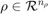
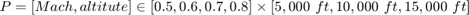

Deriving LPV models from Nonlinear Simulation Models
Contents
Introduction
Numerical linearization can be used to derive grid-based LPV models from nonlinear simulation models. The goal is then to approximate the nonlinear model as a grid-based LPV system by generating a array of state-space models with consistent state vectors, inputs and outputs. This section will outline one approach to generating an array of state-space models from a Simulink model. The process is as follows:
Overview of Modeling Process
- Desired LPV model depends on parameters, .
- Create a grid of parameter values
 .
. - Trim the nonlinear model at each grid point.
- Linearize the nonlienar model at each trim point.
Gridding the Parameter Space
The choice of scheduling parameter is at the users's discretion. A common choice for aircraft applications is Mach and altitude, due to the change in aircraft dynamics as a function of these two parameters.
Once the set of scheduling parameters has been chosen the set is gridded to form . The grid should be made dense enough to capture significant dynamics in the model. The trade-off is that too dense a grid will be cumbersome from a computational perspective.
Example
Given an aircraft model with Mach and altitude chosen as the scheduling parameters, we are interested in developing a model for the aircraft at Mach values between 0.5 and 0.8, and at altitudes between 5,000 ft and 15,000 ft.
Lets assume that the dynamic of the aircraft vary smoothly inside this flight envelope. A first attempt at deriving an LPV model for this system might grid the parameters as follows:
The set of gridded parameter values consists of 12 points arranged in a 4x3 grid defined as follows:

This grid can be defined as an rgrid object in LPVTools using the following commands:
Mach = [0.5:0.1:0.8];
Altitude = [5000:5000:15000];
P = rgrid({'Mach','Altitude'},{Mach,Altitude})
RGRID with the following parameters: Mach: Gridded real, 4 points in [0.5,0.8], rate bounds [-Inf,Inf]. Altitude: Gridded real, 3 points in [5e+03,1.5e+04], rate bounds [-Inf,Inf].
Trimming in MATLAB/Simulink
Once a desired grid of parameter values, , has been chosen. The nonlinear simulation model will need to be trimmed and linearized at each grid point.
The process of trimming a Simulink model relies on the following proceedures and MATLAB commands:
- Start by manually adding the desired model input/output points to the relevant signal lines in the Simulink model (see the help for getlinio for details). Then use getlinio to create a object that describes the input/output points of the desired linearized model.
- Use operspec to grab the operating point specification of the Simulink model. The resulting object contains fields for each input/output point and state in the Simulink model.
- Loop through the parameter grid, , and at each point: (1) Configure the operspec object to specify the desired trim point (i.e. set bounds on inputs, outputs, states, and their derivatives). (2) Use findop to trim the Simulink model at the desired grid point. The process is shown graphically in Figure 1.

Figure 1: Trimming a Simulink model.
Linearization in MATLAB/Simulink
Once a valid trim point has been created for each point in the parameter grid . The function linearize is used to derive a linearized model at each point. The process is shown in Figure 2. Care must be taken that the linearized models that are being generated share a consistent input, output, and state vector. The resulting array of state-space models can be combined with an rgrid object that described the parameter grid to form a grid-based LPV model. Refer to the grid-based LPV modeling tutorial for details on how a grid-based LPV model is assembled out of state-space model data.
Figure 2: Linearizing a Simulink model on a grid of parameter values.